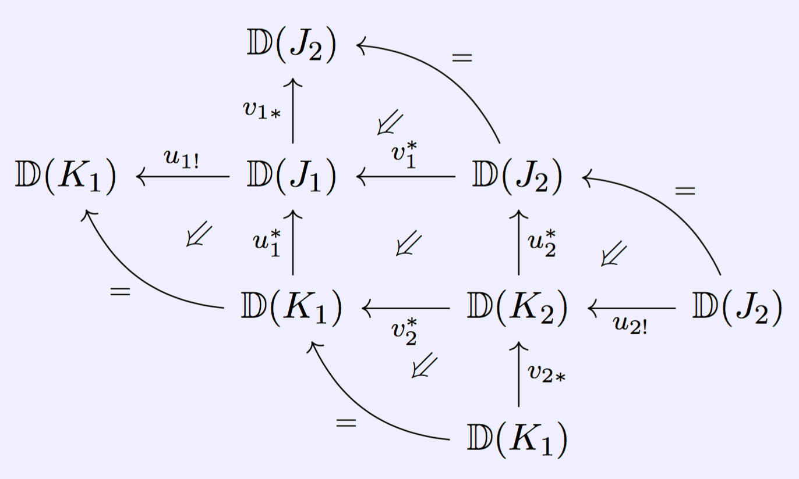

The website formerly known as the UCLA Derivators Seminar
UCLA · Mathematics Department
Los Angeles, CA, USA 90095-1555
Past Participants
- Paul Balmer
- James Cameron
- Kevin Carlson
- Ian Coley
- Martin Gallauer
- Ioannis Lagkas-Nikolos
- John Zhang
Papers read by this seminar
- Denis-Charles Cisinski, Catégories Dérivables
- Jens Franke, Uniqueness theorems for certain triangulated categories possessing an Adams spectral sequence
- Denis-Charles Cisinski, Propriétés universelles et extensions de Kan dérivées
- Richard Garner, Understanding the small object argument
- Moritz Groth, Derivators, pointed derivators, and stable derivators
- Moritz Groth, Revisiting the canonicity of canonical triangulations
- Moritz Groth, Abstract tilting theory for quivers and related categories
- Moritz Groth, Kate Ponto, and Michael Shulman, The additivity of traces in monoidal derivators
- Moritz Groth, Characterizations of abstract stable homotopy theories
- Fritz Hörmann, Enlargement of (fibered) derivators
- Fritz Hörmann, Fibred multiderivators and (co)homological descent
- Bernhard Keller, Le dérivateur triangulé associé à une catégorie exacte
- Jacob Lurie, Higher Topos Theory
- Fernando Muro and George Raptis, K-theory of derivators revisited
- Amnon Neeman, Metrics on triangulated categories
- Marco Porta, Universal Property of Triangulated Derivators via Keller's Towers
- Olivier Renaudin, Plongement de certaines théories homotopiques de Quillen dans les dérivateurs
- Gonçalo Tabuada, Higher K-theory via universal invariants
Conferences attended
- Dérivateurs à Barcelone, University of Barcelona (IMUB), 1 - 4 September, 2015
- Triangulated Categories and Applications, Banff International Research Station (BIRS), 19 - 24 June, 2016
- Workshop on Derivators, Rezidence Dlouhá 17, 12 - 16 December, 2016
- Triangulated Categories and Geometry - a conference in honour of Amnon Neeman, Bielefeld University, 15 - 19 May, 2017
- Homotopy Type Theory (AMS Mathematics Research Community), Snowbird, UT, 4 - 10 June, 2017
- K-theory and related fields, Hausdorff Research Institute for Mathematics (HIM), 19 - 30 June, 2017
- Recent developments in noncommutative algebra and related areas, University of Washington, 17 - 19 March, 2018
- Homotopy Theory Summer, Freie Universität Berlin, 18 - 29 June, 2018
- ICM 2018 K-theory satellite, Universidad de Buenos Aires, 23 - 27 July, 2018
- Workshop on Derivators, Universität Regensburg, 9 - 12 April, 2019
Results
- Paul Balmer and John Zhang, Affine space over triangulated categories: a further invitation to Grothendieck derivators
- Kevin Carlson, On Whitehead's theorem beyond pointed connected spaces
- Kevin Carlson, On the ∞-categorical Whitehead theorem and the embedding of quasicategories in prederivators
- Ian Coley, Stabilization of derivators revisited
- Ioannis Lagkas-Nikolos, Levelwise modules over separable monads on stable derivators
- John Zhang, Affine lines over derivators: properties